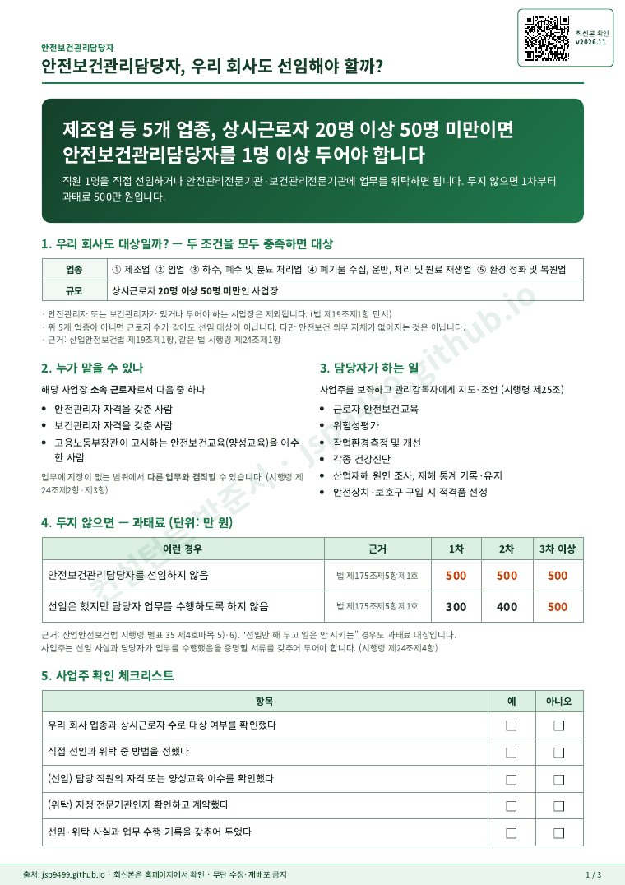
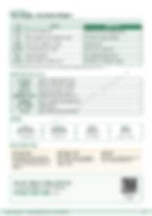
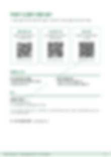

제조업 등 5개 업종, 상시근로자 20명 이상 50명 미만 사업장은 안전보건관리담당자를 1명 이상 두어야 합니다. 직접 선임하거나 전문기관에 위탁하면 됩니다.
아래 두 조건을 모두 충족하면 1명 이상 선임해야 합니다.
| 조건 | 기준 |
|---|---|
| 업종 | 제조업 / 임업 / 하수, 폐수 및 분뇨 처리업 / 폐기물 수집, 운반, 처리 및 원료 재생업 / 환경 정화 및 복원업 |
| 규모 | 상시근로자 20명 이상 50명 미만 |
안전관리자 또는 보건관리자를 두었거나 두어야 하는 사업장은 제외됩니다. 근거: 산업안전보건법 제19조제1항, 같은 법 시행령 제24조제1항
| 이런 경우 | 1차 | 2차 | 3차~ |
|---|---|---|---|
| 안전보건관리담당자를 선임하지 않음 | 500 | 500 | 500 |
| 선임했지만 담당자 업무를 수행하도록 하지 않음 | 300 | 400 | 500 |
근거: 산업안전보건법 제175조제5항제1호, 같은 법 시행령 별표 35 제4호마목
근거: 산업안전보건법 제19조제4항, 같은 법 시행령 제24조제2항·제3항
PDF 1쪽을 그대로 보여 드립니다. 전체 3쪽은 아래에서 무료로 내려받으세요.

1쪽 미리보기 · 눌러서 크게 보기
2쪽
3쪽대상 여부 확인과 위탁 상담은 상담 신청서를 남기시거나 전화로 문의하세요.
전화번호는 안심번호입니다.
이 자료는 일반적인 안내용 예시입니다. 사업장 업종·규모·작업에 맞게 보완해 사용하고, 법령은 국가법령정보센터(law.go.kr)에서 최신 내용을 확인하세요.